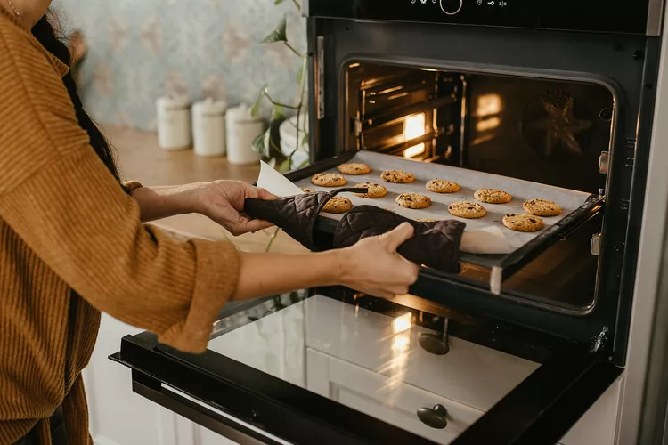
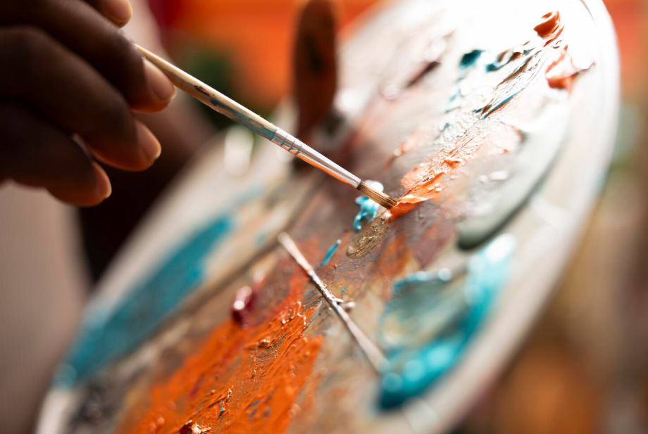
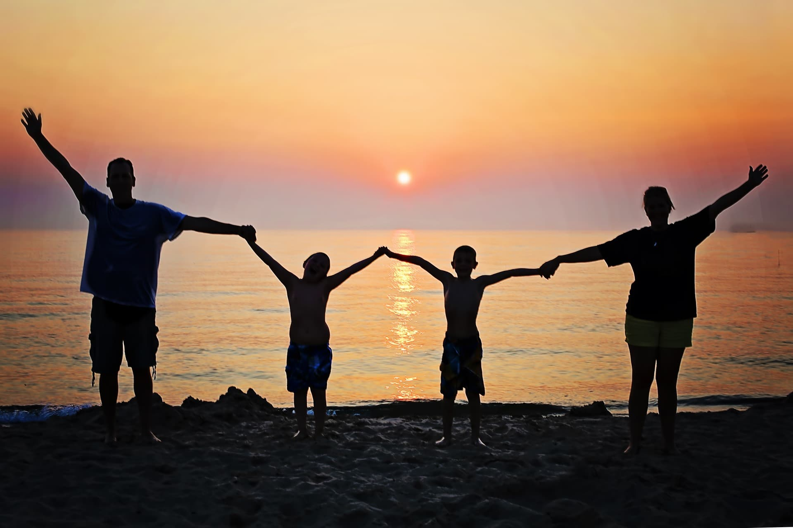

Baking
Stepping into the kitchen offers a structural reset away from clinical settings. Balancing precise measurements with artisanal creativity allows me to focus completely on the present moment, sharing homemade warmth with family and friends.

Painting
Expressing thoughts through color serves as an outlet for quiet narrative exploration. Working with abstract layers provides a completely different medium of communication, balancing intense analytical psychology work with loose, freeform visual design.

Outdoors & Family
Spending time along nature trails provides the ultimate mental clarity and personal grounding. Connecting deeply with family outdoors offers perspective, refreshing my worldview so that I can continually show up fully present for my practice.
